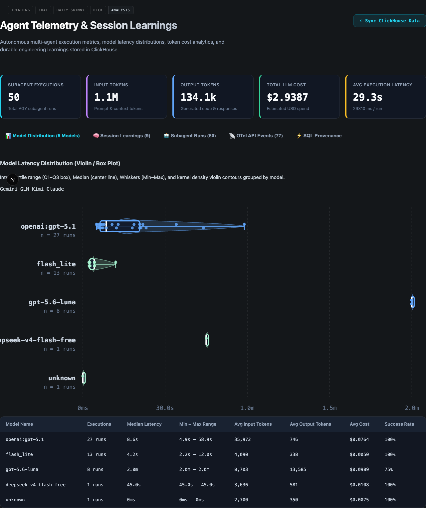

Analysis header cleanup
✓ Verified in the local rendered /analysis page.
Removed the “CLICKHOUSE CLOUD ACTIVE”, “OTEL TRACES ENABLED”, and “VIOLIN / BOXPLOT VISUALS” pillboxes. The page title, subtitle, refresh action, KPI cards, and tabs remain visible.
Captured with agent-browser against the follow-up PR worktree.
